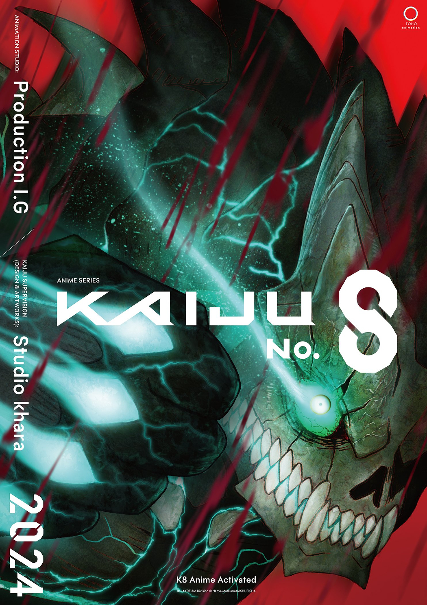
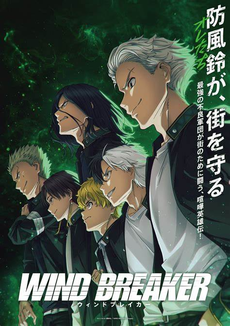
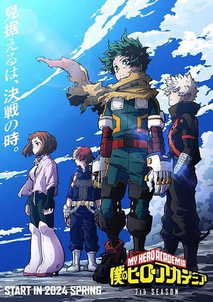

Top Animes

Kaiju No. 8
Studio: Production I.G
Release Date: April 13
In a world terrorized by gigantic kaiju, Kafka Hibino is tired of being a sweeper, tasked with cleaning up the monsters. He dreams of joining the Defense Corps but gives up, thinking it's impossible. However, when a parasitical monster invades his body, he gains powers that could make him the greatest kaiju destroyer.

Wind Breaker
Studio: CloverWorks
Release Date: April 4
When Haruka Sakura starts at Furin High, he aims to become the strongest in a school full of delinquents with the same goal. The school is notorious for its fierce competition among students. Despite the daunting challenges, Haruka is determined to succeed. He's ready to give his best effort no matter what it takes.

Demon Slayer: Season 4
Studio: Ufotable
Release Date: May 12
Tanjiro Kamado's mission to turn his sister Nezuko back into a human continues in the new season. With Nezuko's immunity to sunlight revealed, Muzan and the demons plot to kidnap her instead of attacking civilians. The Demon Slayer Corps, including the Hashira, intensify their training to prepare for the impending threat.

My Hero Academia: Season 7
Studio: Bones
Release Date: May 4
In a world where nearly everyone has a superpower called a quirk, heroes and villains dominate. Izuku Midoriya, born without a quirk, inherits the abilities of All Might, the world's most famous hero. He attends U.A. High School to train as a hero while facing the dangerous League of Villains.
Contact